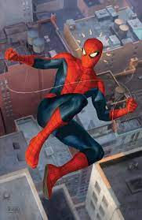
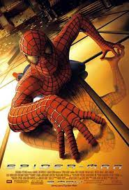

스파이더맨
스파이더맨
 소개
마블 코믹스의 등장인물. 본명은 피터 파커.
스탠 리, 스티브 딧코 콤비가 만들었으며, 스탠 리가 자신이 만든 수많은 캐릭터 중에서도 유독 자식처럼 아꼈던 캐릭터.
첫 등장은 1962년 8월 발간된 어메이징 판타지(Amazing Fantasy) 15호로, 코믹스 최초의 단독 주인공 10대 히어로이다.
특징

첫 등장 시 여려모로 파격적이엇던 캐릭터다. 히어로의 일상을 다룬 드라마는 신선한 시도였으며
슈퍼히어로로서의 스파이더맨 또한 개성적인 캐릭터였다.
거미줄을 이용해 다양한 계략으로 상대와 싸운다거나,
스파이더센스를 이용해 위협을 감지하는 등 능력도 상당히 독창적이었다.
현실적인 삶을 다룬 히어로로는 최고라고 할 만하다. 이전까지 히어로의 일상은 사건에 노출되는 계기 정도로만 다루어지는 경우가 많다.
일상이라고 해봐야 연애 관계정도로 묘사하는 게 대부분이었다.
그러나 스파이더맨은 일상과 히어로 활동의 비중이 거의 반반이며 서로 영향을 끼친다. 스파이더맨으로서 활약하느라 숙제를 못한 피터가 교수에게 꾸중을 듣거나
메이 숙모의 건강이 걱정되어서 이길 수 있던 적도 내버려두고 도망갔다가 다시 잡기 위해 고생한다.
능력
스파이더 스트랭스
초인적인 근력과 회복력을 가지고 있다. 15톤 정도는 들어올릴 수 있고
감정적으로 격앙이되면 힘이 더 세진다
스파이더센스
스파이더맨의 제6감으로 위험을 느끼고 자동으로 경고해 준다.
기능이 다양해서 공격을 피하고, 적을 찾고 거미줄 조준에 도움을 주고 라디오 주파수까지 감지한다.
돌아가기